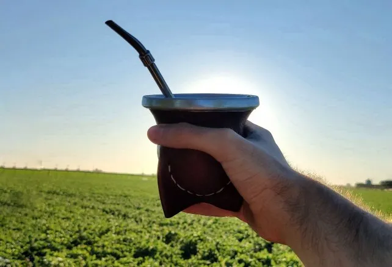

- Inicio
- Culturas de mate
- Contactanos
Mate Argentino

Al consultar de manera espontánea cuál es el producto que mejor representa a los argentinos “el mate se lleva el primer lugar como rasgo identitario de la argentinidad” con un 38%, seguido de la carne con un 37%, y luego el dulce de leche y el vino con un 11 % y un 7% respectivamente.
Fundadores del Mate
Nosotros
Prensa
Defensa del Consumidor